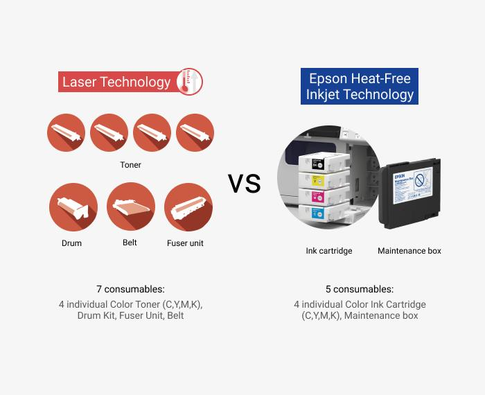
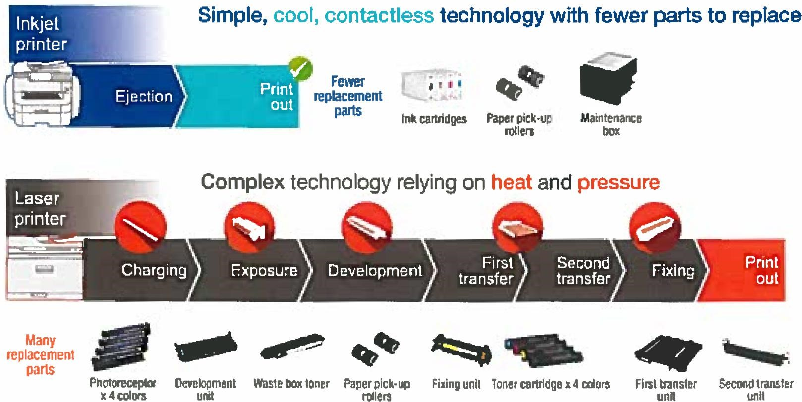
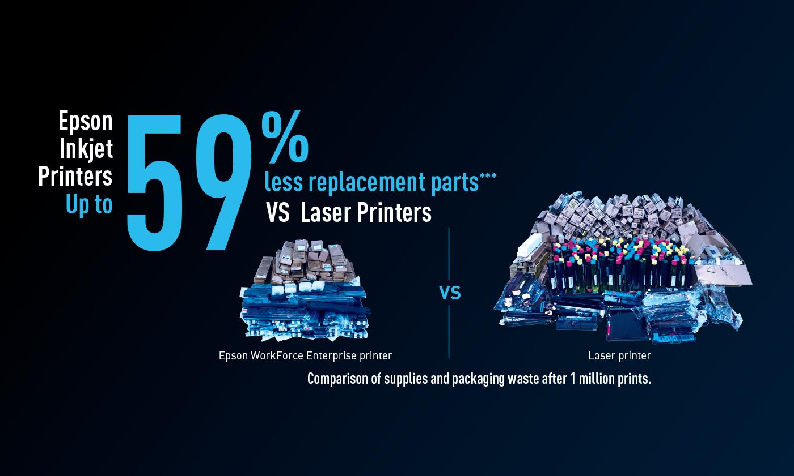

Lower operating costs
Reduce unnecessary travel, labor, parts replacement, inventory, and service overhead.
A modern operating model for print infrastructure
Lower operating costs. Fewer service interruptions. Stronger security. Faster recovery. Greater operational control.
See what changesWhat changes
Reduce unnecessary travel, labor, parts replacement, inventory, and service overhead.
Use engineering that removes many of the wear components that historically created service events.
Reduce unnecessary third-party access while keeping recovery knowledge inside the organization.
Resolve many common interruptions directly at the device instead of waiting for a technician.
Designed for the people already supporting operations. They do not need to become copier technicians.
Support locations where technician response is expensive, delayed, restricted, or unavailable.
Evidence 01
Parts wear. Wear creates maintenance. Maintenance creates service. Service creates operating cost.

Evidence 02
Every eliminated replacement part removes a future inventory event, maintenance event, and potential service interruption.

Evidence 03

Less inventory. Less handling. Less interruption.
Recovery
Traditional response
InPower response
Security
Capability transfer
Selected because its engineering supports recovery and continuity.
Transferred through structured training and approved documentation.
Common recovery does not require a trained copier technician.
Outside escalation begins only when it is genuinely necessary.
The operating model
InPower combines modern print technology, factory knowledge, guided recovery, and controlled escalation into an operating model designed to reduce cost, strengthen security, and keep operations moving.
Technology selected for the operational outcome it creates.
Knowledge transferred to the people already supporting the operation.
Recovery begins inside the organization, with escalation only when needed.
Modern print economics
Traditional cost-per-page models were built around technologies that consumed parts, maintenance, and technician labor. Modern architectures create the opportunity for economics that reflect the engineering now in use.
Begin the discussion
We will help determine whether modern print engineering can improve cost, continuity, security, recovery, and support across your environment.
InPower is implemented by Matrix Business Systems.